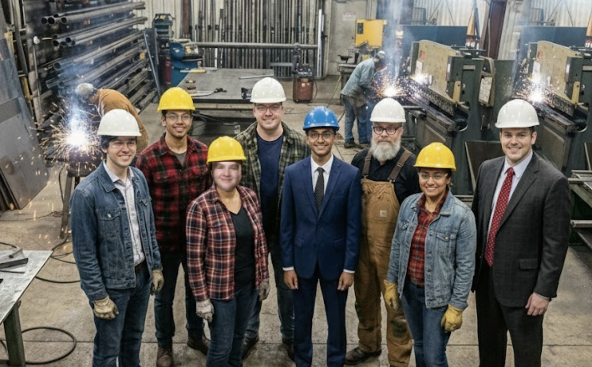

Family Values, Professional Results
At MMF, we're more than a metal fabrication company — we're a team that's been built over three decades of hard work, dedication, and a commitment to doing things right. Our leadership team brings together decades of combined experience in manufacturing, operations, technology, and customer service.
Jon
Jon took over the family business from his father 8 years ago and has been steering MMF through the evolving manufacturing landscape ever since. With a deep respect for the company's heritage and an eye toward the future, Jon balances the practical wisdom of experienced fabricators with new technologies and approaches. He's known for being cautiously optimistic — willing to invest in the right projects while never forgetting the lessons learned from past challenges.
Anna
Anna joined MMF three years ago to modernize the company's market presence and customer communications. She's brought fresh perspective to a traditionally operations-focused business and is passionate about understanding the customer journey. Her small but scrappy marketing team punches above its weight, and she's always looking for ways to better connect marketing efforts to business results.
Chris
Chris is the technical backbone of MMF, managing everything from the ERP system to shop floor tablets. He's genuinely excited about emerging technologies but realistic about the challenges of implementation — especially when data lives in multiple systems that don't talk to each other. He's been quietly experimenting with new tools and sees real potential for the company.
Zubia
Zubia keeps the financial engine running and ensures every investment delivers measurable returns. With a sharp eye for data and a healthy skepticism of promises without proof, she's the voice of fiscal responsibility on the leadership team. She's also sitting on more useful data than most people realize — if you need numbers, Zubia has them.
Mike
Mike runs the shop floor and knows where every job is at any given moment — because people ask him constantly. A pragmatist who's seen technology initiatives come and go, Mike focuses on what works and isn't afraid to voice concerns when he sees problems ahead. His team respects him because he's been in their shoes and still gets his hands dirty when needed.
Vinny
Vinny leads the sales team with infectious energy and a genuine passion for solving customer problems. He's the first one in the office and often the last one out, juggling quote requests, customer calls, and new business development. Always looking for ways to move faster and win more deals, Vinny embraces new tools and isn't afraid to experiment.
Colin
Colin has been estimating jobs at MMF for over two decades, developing an almost intuitive sense for what a job will cost and how long it will take. His knowledge of materials, processes, and customer requirements is invaluable — the kind of expertise that takes years to develop and is impossible to replace. He's the person everyone turns to when a quote doesn't look right.
Keith
Keith served as our Senior Inventory Manager for 16 years, bringing order to chaos and ensuring every part was where it needed to be, when it needed to be there. His meticulous attention to detail and encyclopedic knowledge of our inventory systems made him irreplaceable. We lost Keith to the circle last spring, but his memory lives on in every perfectly organized bin, every flawlessly executed count, and every shipment that arrives exactly on time.